← PortalTrês opções por efeito · contatos
Capturas offline no Edge: água com ponta e stretch, vórtice de centro aberto e cortes brancos de vento.
Resultados dos testes das nove opçõesSeed Bomb: fases completas e efeito de disparo selecionável
Verificação dos 89 controles, limites 5×, fases, troca de efeito, exportar/importar e autosave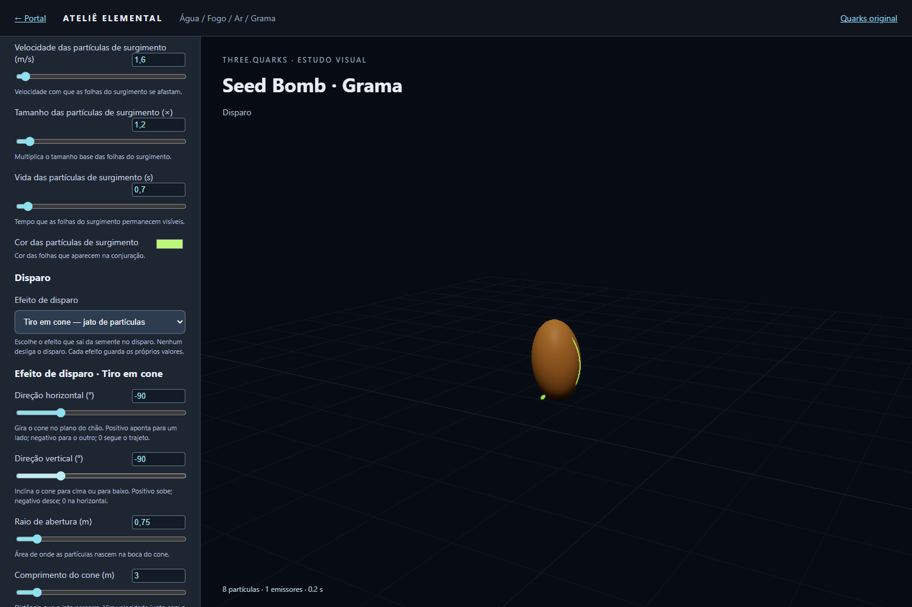
Seletor Efeito de disparo com o Tiro em cone escolhido: só os sliders do efeito ativo aparecem, e os valores da Argola continuam guardados.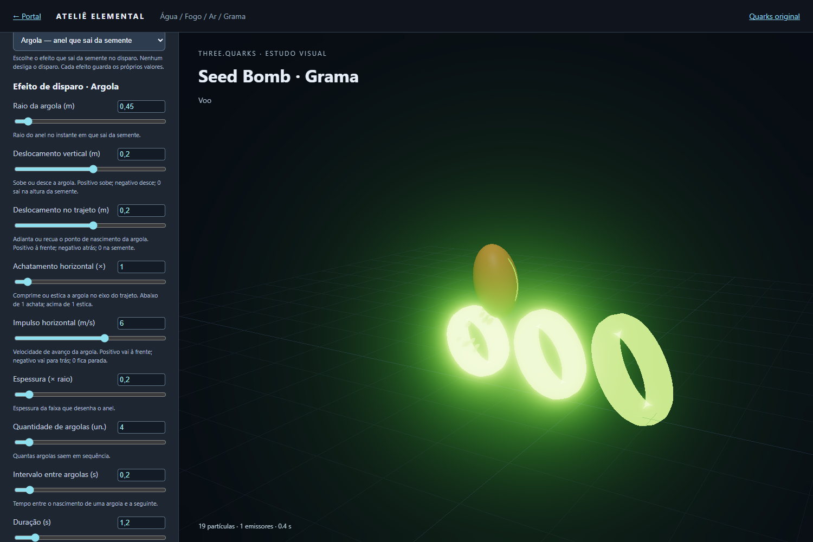
Argola: quatro anéis, impulso de 6 m/s, intervalo de 0,2 s e duração de 1,2 s. A legenda mostra a fase Voo.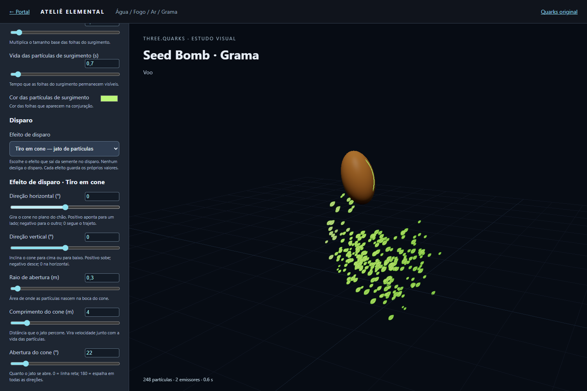
Tiro em cone: 220 partículas, 4 m de comprimento, abertura de 22° e 0,5 s de emissão.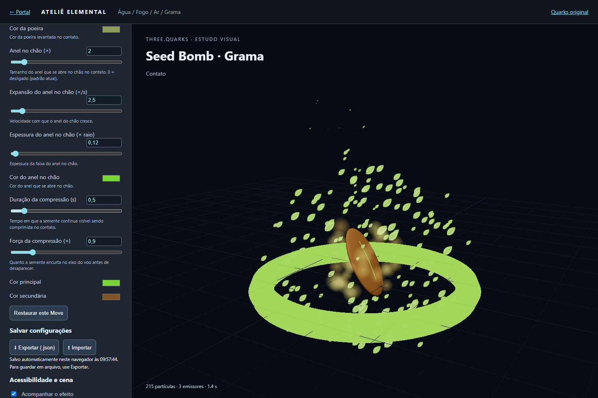
Contato: anel no chão ligado, folhas da explosão, poeira e semente comprimida — fase Contato na legenda.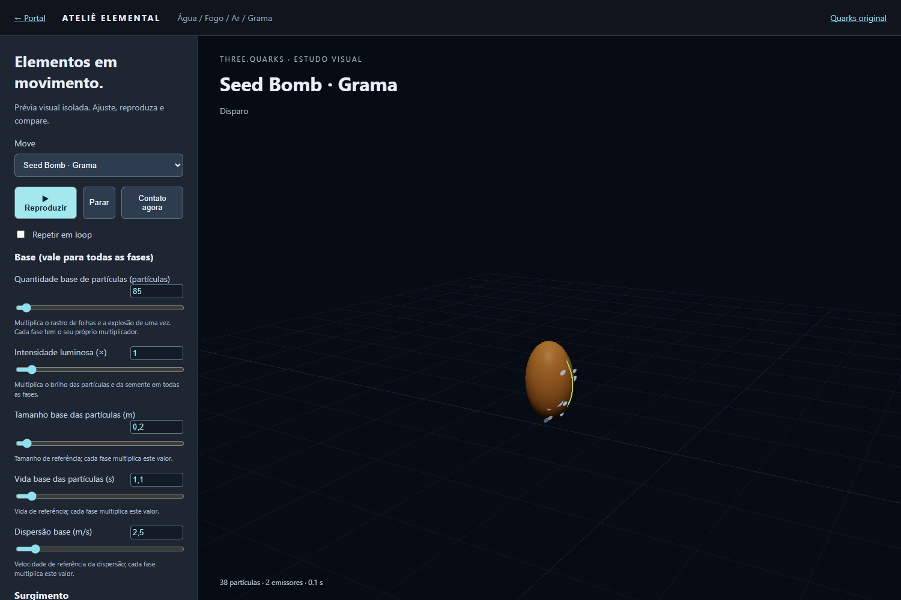
Painel por fases (Base, Surgimento, Disparo, Voo, Rastro de folhas, Contato) com nome, unidade, explicação e campo numérico.40 novos controles de água e limites 5× nos outros Moves
Verificação dos controles, tempos e limites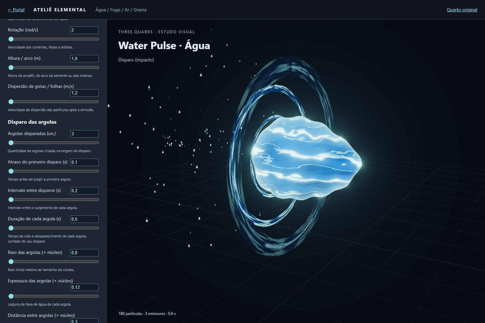
Argolas com atraso de 0,1 s, intervalo de 0,2 s e vida individual de 0,5 s.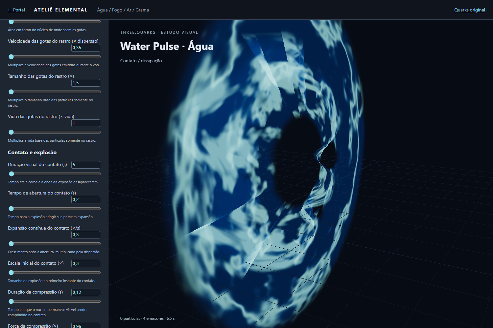
Contato configurado para durar 5 s, ainda visível após 3,5 s.Lançamento, direção e controles — revisão atual
Resultados dos testes de lançamento e controles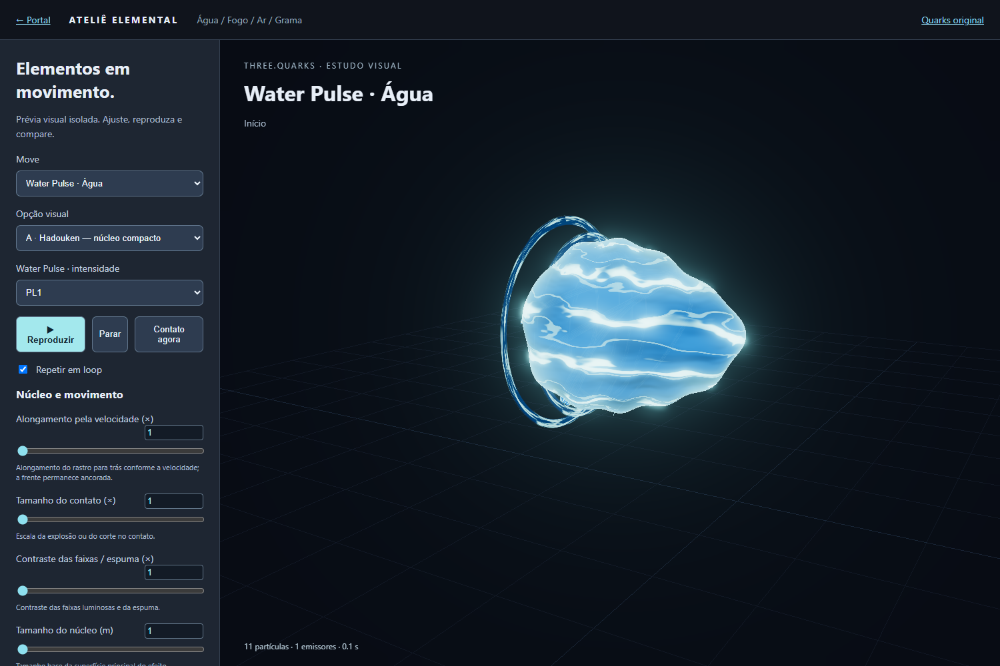
Água: três argolas no lançamento, duração de 0,3 s.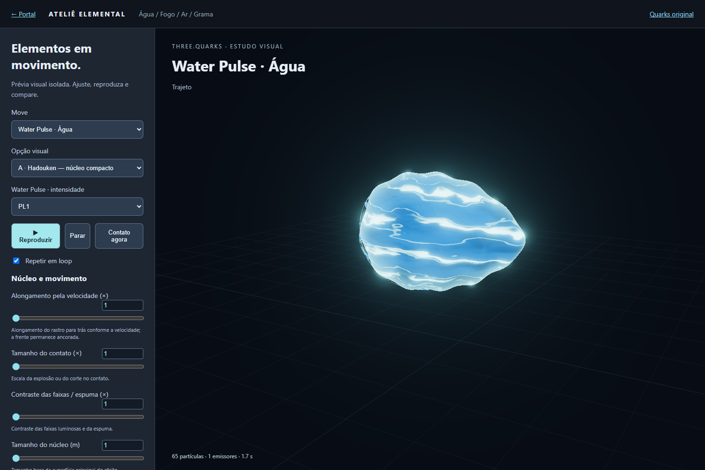
Água: frente ancorada e alongamento para trás.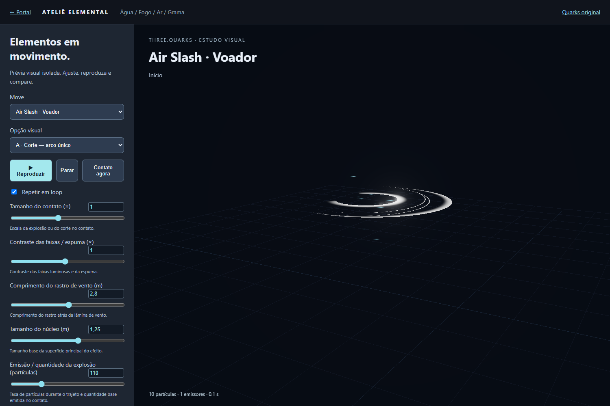
Air Slash: surgimento aos 90 ms.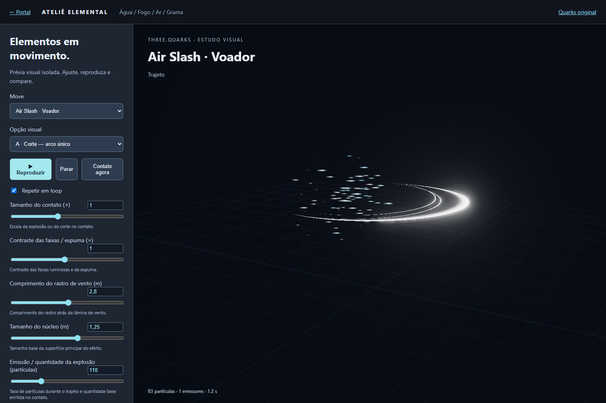
Air Slash deitado, paralelo ao chão.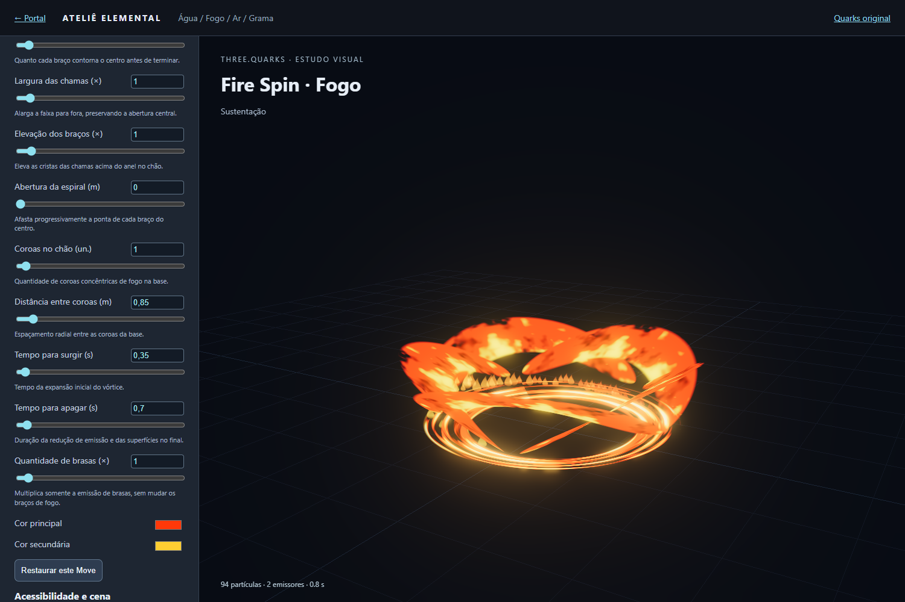
Fire Spin: controles adicionais com explicações.Opções A/B/C e contatos
Diagnóstico original do adaptador: preset corrigido